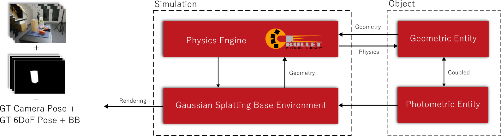

We introduce Physical Enhanced GAussian Splatting SimUlation System (PEGASUS) for 6DOF object pose dataset generation, a versatile dataset generator based on 3D Gaussian Splatting.
Preparation starts by separate scanning of both environments and objects. PEGASUS allows the composition of new scenes by merging the respective underlying Gaussian Splatting point cloud of an environment with one or multiple objects. Leveraging a physics engine enables the simulation of natural object placement within a scene by interacting with their extracted mesh. Consequently, an extensive amount of new scenes - static or dynamic - can be created by combining different environments and objects. By rendering scenes from various perspectives, diverse data points such as RGB images, depth maps, semantic masks, and 6DoF object poses can be extracted. Our study demonstrates that training on data generated by PEGASUS surpasses the performance of existing 6DoF pose estimation networks such as deep object pose.
Furthermore, our sim-to-real approach validates the successful transfer of tasks from synthetic data to real-world data. Moreover, we introduce the CupNoodle dataset, comprising 30 Japanese cup noodle items. This dataset includes spherical scans that captures images from both object hemisphere and the Gaussian Splatting reconstruction, making them compatible with PEGASUS.

We extend our sincere gratitude to Abdullah Mustafa for his valuable feedback and to Toshio Ueshiba for his extensive expertise in UR5. This research has been supported by the New Energy and Industrial Technology Development Organization (NEDO), under the project ID JPNP20016.
@article{meyer2023pegasus,
author = {Meyer, Lukas and Erich, Floris and Yusuke, Yoshiyasu and Stamminger, Marc and Ando, Noriaki and Domae, Yukiyasu},
title = {PEGASUS: Physical Enhanced Gaussian Splatting Simulation System for 6DOF Object Pose Dataset Generation},
journal = {ArXiv},
year = {2023},
}